簡介
在 2017 年，由 self attention 構成的新模型 Transformer 被提出。
最初使用在文本翻譯的研究上，從而推廣至整個 NLP 領域。
但實際上，只要能將問題轉換成「N個一維張量」，就能使用 Transformer 處理。
優點
- 快速：跟 RNN 類的模型相比，可將輸入序列做平行運算。
- 長距離關注：跟 CNN 類的模型相比，可依據輸入序列長度動態改變感受野。
缺點
- 記憶體使用量過大，受硬體設備限制了其關注距離。
架構
Transformer 主要由「Encoders」以及「Decoders」兩區塊組成，
Encoders 負責利用上下文資訊精煉 Input 的特徵，
Decoders 則是關注 Input 與 Target 的關聯性，並藉此取得所需的資訊。

Encoder 與 Decoder 的內部機制便是本論文的重點：Multi Head Self Attention。
Multi Head Self Attention
Multi Head Attention 是由多個 Scaled Dot Product Attention 組成。
每個 Scaled Dot Product Attention 會計算出不同的 Head，
Head 就像是 CNN 的 Feature Map 一樣，
各 Head 具有自己關注的特徵，從越多方面取得特徵便能獲得更好的效果。

Scaled Dot Product Attention

其中
Qin/Kin/Vin
矩陣都是由一句話傳換成的詞向量。
而其中 Kin 與 Vin 是相同的矩陣。
大小分別為：
- Qin：length Q x dembedding
- Kin：length K x dembedding
- Vin：length K x dembedding
{kind=link}
上圖為 Qin、Kin、Vin 的例子
Qin/Kin/Vin 經過各自的線性轉換後變成 Q/K/V 矩陣：

另外，Q/K/V 轉換完後的大小分別為
- Q：length Q x dk
- K：length K x dk
- V：length K x dv
轉換完成後就進入 Attention Function。
利用內積計算 Q 的每個向量與 K 的每個向量的相似程度，若向量夾角越小，便會得到較大的內積，
因此先將 Q 與 K 的轉置矩陣 K^T 相乘得出 QK 舉陣：
(等同計算 Q 的每個向量與 K 的每個向量的內積)
{kind=link}
再將 QK 矩陣除以 dk^0.5 後帶入 Softmax 得到注意力權重：
(除以 dk^0.5 是為了避免注意力權重只剩下接近 0 與 1
的數值，如果沒有進行縮放會使計算所得之梯度非常小，造成梯度消失而無法更新權重。)
{kind=link}
計算出注意力權重後，便可利用 V 來建立出 Head：
{kind=link}
Multi Head
Multi Head Attention 就是將多個 Scaled Dot Product Attention 的結果串聯後經過一次線性轉換。
線性轉換後的大小為 length Q x dembedding，與輸入的 Qin 大小一致。
{kind=link}
在向量空間中的意義
{kind=link}
{kind=link}
{kind=link}
{kind=link}
{kind=link}
{kind=link}
{kind=link}
{kind=link}
{kind=link}
{kind=link}
Input & Target
Embedding
{kind=link}
Positional Encoding
在全部由 Self Attention 構成的 Transformer 中，無法做到如同 RNN 與 CNN 那樣自然的掌握位置資訊。
但是處理序列問題時，位置資訊又非常重要，因此使用了 Positional Encoding
的方式手動的將訊息寫進輸入之中。
上式的 PE 就是記載著位置資訊的矩陣，其內容如下式：
其中的 pos 與 2i、2i+1 意義如下：
- pos：句子中的第 pos 個字詞。
- 2i、2i+1：word embedding 後所得向量的第 n 維。
{kind=link}
上圖是 50 個字詞、dembedding = 10 的 PE 範例
Encoders & Decoders
Encoders Decoders 是 Transformer 的核心區塊，
他們個別由多層的 Encoder Layer 與 Decoder Layer 相疊而成，
每層都具有各自的可訓練權重。
當 Input 經過 Encoders 後，就會做為 Decoders 的 K/V ，將 Input 的資訊傳遞過去。

Encoder Layer

Encoder Layer 中有兩塊主要計算結構，
分別是前面所提及的 Multi Head Attention
以及由幾層全連接層(中間有使用 ReLU 作為激活函數)組成的 Feed Forward。
Multi Head Attention
在 Encoder Layer 的 Multi Head Attention 中，會傳入相同的 Qin、Kin、Vin。
Residual
透過 Residual 的跳接結構可以保留最開始的 Positional Encoding，
因此不必每通過一層 Encoder Layer 就要補上位置資訊，
對於深層的網路也能有效的避免梯度消失。
{kind=link}
Layer Normalization
使其平均值 = 0、標準差 = 1，然後將標準化的結果與一組縮放、偏移權重做計算，便是 Layer Normalization 的最後答案。
Decoder Layer
{kind=link}
在翻譯任務的訓練與使用方式
訓練

使用方式

實驗
基本模型

| N | encoder&decoder 的數量 |
|---|---|
| dmodel | embedding length (前面的 dembedding) |
| dff | encoder&decoder 中，Feed Forward 隱藏層神經元數量 |
| h | Multi-Head Attention 的 head 個數 |
| dk | Qinput、Kinput 經過線性轉換得到之 Q、K 的深度(維度) |
| dv | Vinput 經過線性轉換得到之 V 的深度(維度) |
| Pdrop | Dropout 設定的機率 |
| ϵls | label smoothing 中的機率雜訊 |
{kind=link}
{kind=link}
{kind=link}
{kind=link}
{kind=link}